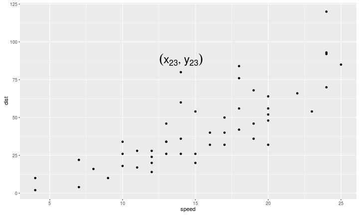
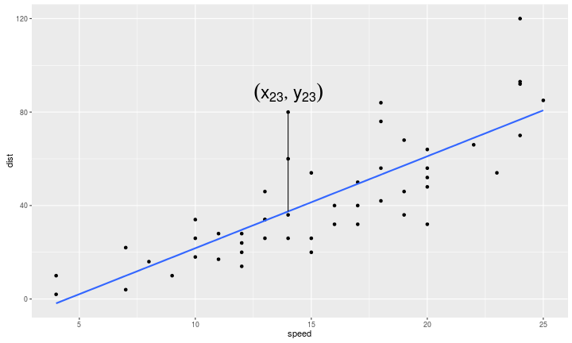
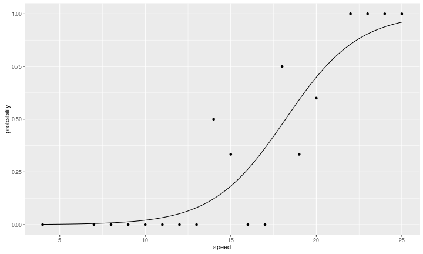
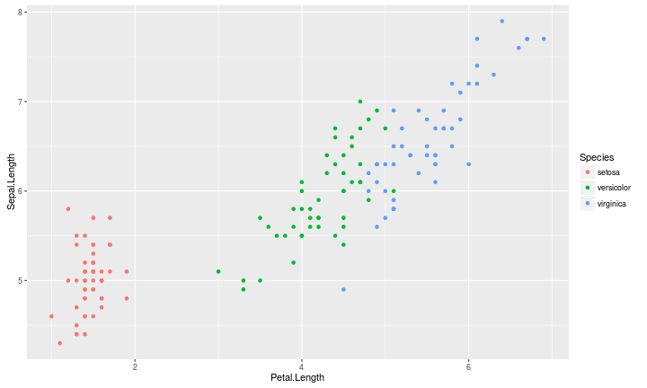
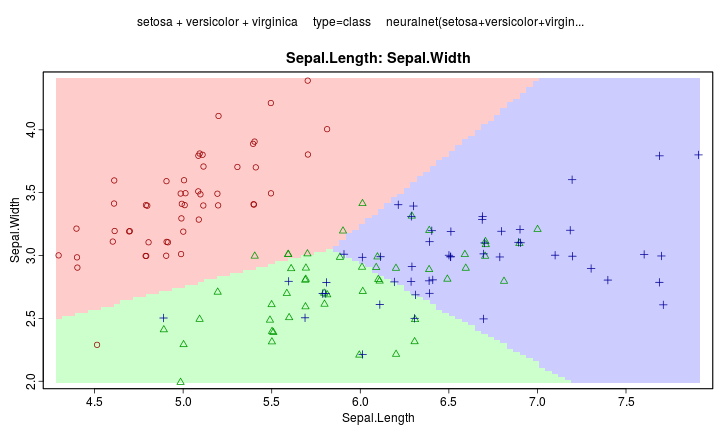
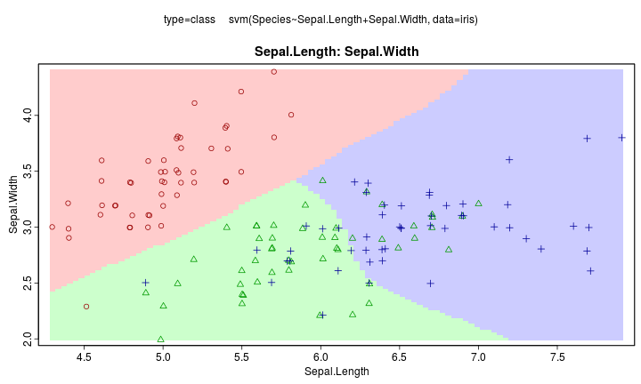
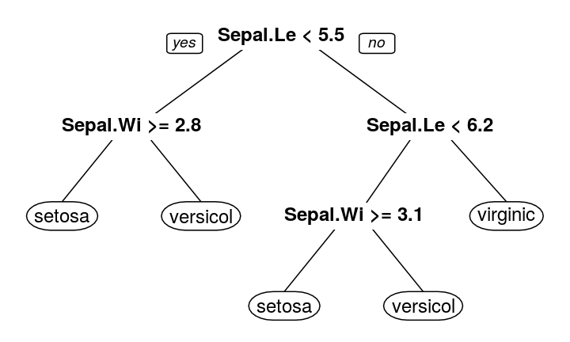
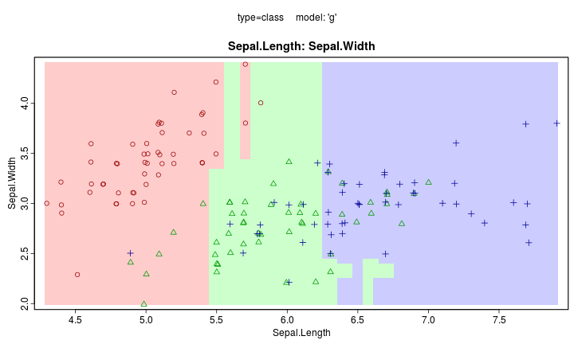
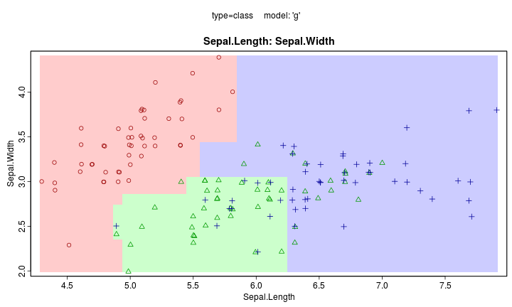

- 機器學習簡介
- 線性模型(迴歸分析)
- Regularization
- Support Vector Machine
- 分類樹
- Bagging 與 Random Forest
- Boosting 與 Gradient Boosted Decision Tree
- Neuron Network
Machine Learning
Wush Wu
國立台灣大學
課程大綱
機器學習簡介
什麼是學習
- 字典定義：因為知識、教育、研究或經驗而改變行為
- 機器學習：讓機器具備學習能力的技術
人工智慧

廣告播放的自動化系統
- 訊號源：使用者的瀏覽特定的網站
- 感知：使用者的特性、網站的特性
- 模型：男生喜歡電玩相關廣告、女生喜歡化妝品相關廣告
- 行為：猜測使用者的性別。如果可能是男生，就播放電玩相關廣告；如果可能是女生，就播放化妝品相關廣告
機器學習

廣告播放的自動化學習系統
- 訊號源：使用者的瀏覽特定的網站
- 感知：使用者的特性、網站的特性
- 模型：男生喜歡電玩相關廣告、女生喜歡化妝品相關廣告
- 行為：猜測使用者的性別。如果可能是男生，就播放電玩相關廣告；如果可能是女生，就播放化妝品相關廣告
- 學習：依照播放的結果，調整電玩廣告和化妝品廣告的比例
為什麼我們要讓機器去學習？
- 機器學習不能解決所有的問題
- 問題必須要轉換成機器學習可以解決的問題
- 機器學習系統需要成本做開發
- 機器學習系統需要額外的維護成本（http://www.slideshare.net/WushWu/ss-55964136）
- 機會成本：如果一開始能讓機器把任務做好，何必讓它花時間學習？
實際的問題 \(\Rightarrow\) 機器學習問題
- 我們想要增加廣告的營收
- 廣告的營收和點擊率相關
- 在每次推播廣告給瀏覽者前，考慮「該瀏覽者點擊每種廣告的機率」
- 預測瀏覽者點擊每種廣告的機率
使用機器學習的好處
人的主流意見可能出錯
- 範例：廣告播放
- 我們以為女生不喜歡遊戲類廣告
- 有些手機遊戲是針對女生設計
「模型」可能複雜到人無法處理
- \(Y = f(X)\) 的 \(f\) 可能複雜到人無法一開始就設計出好的答案
- 範例：廣告播放
- 瀏覽者有數十種標籤
- 有數百個網站與廣告
環境的特性一直在改變
- 人無法跟上環境的改變
- 範例：廣告播放
- 簽約的網站與廣告會一直更換
- 瀏覽者的喜好也會一直更換
我們該使用機器學習相關技術嗎？
- 人可以做嗎？
- 使用機器學習的成本 v.s. 使用人的成本
- 範例：decaptcha
Captcha
- 用於分辨人或電腦的問題

Decaptcha
- 想要用電腦做某些事情時，必須要讓電腦能通過Captcha
- Decaptcha的方式：
- 影像辨識
- 群眾外包 https://anti-captcha.com
你真的需要使用機器學習嗎？
- 你的問題可以轉換成機器學習能解決的問題嗎？
- 你的問題用人解決很昂貴，或是不可能嗎？
- 你有維護機器學習解決方案的人嗎？
機器學習領域常用名詞
- $Y$：目標變數、應變變數、response
- $X$：解釋變數、獨立變數、covariates
機器學習解決的問題
- 監督式學習：給定 \(X\) ，預測 \(Y\)
- 分類： \(Y\) 是類別型變數
- 迴歸： \(Y\) 是解釋型變數
- 非監督式學習：給 $X$，對 \(X\) 分群
分類問題（\(Y\) 是類別型變數）
- 二元分類
- 點擊預測： \(Y =\) 使用者會不會點廣告
- 股票的漲跌： \(Y =\) 下一個單位時間股價會往上走或往下走
- 多元分類
- 手寫辨識： \(Y =\) 使用者所撰寫的字
- 語音辨識： \(Y =\) 使用者所發出的聲音
回歸問題（$Y$是連續型變數）
- 股價預測 ：\(Y =\) 下一個單位時間時，特定股票的股價
- 物價預測 ：\(Y =\) 特定商品在下一個單位時間的價格
叢集問題（$Y$不存在）
- 顧客分群： \(X =\) 顧客的特徵
- 廣告分群： \(X =\) 廣告的特徵
機器學習技術較常用應用於預測
- 鑑往知來
預測型分析
- 在事件發生之前，預測事件的結果
- 利用預測結果，決定動作
股價
- 預測未來股價的漲跌，決定行動
- 漲：買進
- 跌：賣出
預測型分析的特性
- 模型的準確度是主要目的
- 不在乎模型的內容是否能帶來知識
- 通常預測精準的模型，都會複雜到人類難以理解（黑盒子）
解釋型分析
- 挖掘現象的因果關係
公司的營收
- 預測明年公司營收的準確度價值不高
- 9~10億 \(\Rightarrow\) 9.9億~10.1億
- 找出影響公司營收的原因價值很高
解釋型分析的特性
- 模型的合理性是主要目的
- 模型通常不準
- 分析師必須要能夠透過模型尋找出價值
- 例：透過分析資安數據，發現特定作業系統比較脆弱，容易發生資安事件
點擊率預測
- 評分： \(l(y, \hat{y})\)
- 點擊預測： \(l(y, \hat{y}) = \left\{\begin{array}{lc} 0 & \text{if } y = \hat{y} \\ 1 & \text{if } y \neq \hat{y} \end{array}\right.\)
機器如何學習
- 評分（Loss Function）
- 優化
評分
- 評量預測結果
- 調整預測的方向
- 常常牽涉到統計模型
優化
- 找出合理的方法讓預測越來越準
- 常常牽涉到數值方法
總結
- 了解機器學習的目的與優點
- 了解機器學習能解決的問題
線性模型(迴歸分析)
統計模型
- $Y$是我們感興趣的變數, $X$是可能跟$Y$相關的資料
- 當$Y$未知時，$X$仍已知
- \(Y = f(X) + \varepsilon\)
- $f(X)$描述我們理解的變化，使用的數學不牽涉到機率
- \(\varepsilon\) 描述我們不能理解的變化，通常 \(\varepsilon\) 是隨機變數，使用的數學需要機率
範例：轉換率預測
- 收集的資料帶有：使用者資訊、商品資訊、網站資訊、有無點擊、有無放入購物車、有無轉換
- 目標：預估轉換率
- 有無點擊與有無放入購物車等資訊，能不能放入$X$中做學習？
有沒有$\varepsilon$的差別
- \(Y = f(X)\):
- 只有描述我們對Y的期待值
- 對於隨機性質沒有描述
- \(Y = f(X) + \varepsilon\)
- 我們會假設$\varepsilon$的機率性質
- 一旦取得$\varepsilon$的分佈，即可找出估計$f$的方式，以及該方式估計$f$的特性
- 分佈：機率密度函數、幾率質量函數或是一群有代表性的樣本
統計與機器學習
- 評分的定法
線性模型
- \(Y\) 是煞車滑行的距離
- \(X\) 是車速
- \(Y = f(X) + \varepsilon\)
- \(f(X) = \beta_0 + \beta_1 X\)
X-Y 散佈圖
- \((x_1, y_1), (x_2, y_2), ...\) ：已知$X$推測\(Y\)

最小方差直線
- \(Y = \beta_0 + \beta_1 X\)

最小方差直線的性質
- \(Y = \beta_0 + \beta_1 X + \varepsilon, \varepsilon \overset{i.i.d.}{\sim} N(0, \sigma^2)\)

線性模型
- \(X\) 不一定只有一個變數，可能有： \(X_1, X_2, ..., X_p\)
- \(Y = \beta_0 + \sum_{i=1}^p \beta_p X_p\)
- 線性模型是「可以」解釋的
- Dist = -17.5790949 + 3.9324088 \(\times\) Speed + \(\varepsilon\)
- \(\varepsilon \overset{i.i.d.}{\sim} N(0, 236.5316886)\)
線性模型
- 線性模型是非常泛用的模型
- 具備有豐富的彈性
- 具備有良好的解釋性
- 可以透過「交互作用」產生複雜的模型
- 統計學家對線性模型的理解非常深入： 當 \(\varepsilon \overset{i.i.d.}{\sim} N(0, \sigma^2)\)
- 知道最好的估計方法：最小方差直線
- 知道$\varepsilon$對估計方法的影響
線性模型的範例
| Dependent variable: | |
| dist | |
| speed | 3.932*** |
| (0.416) | |
| Constant | -17.579** |
| (6.758) | |
| Observations | 50 |
| R2 | 0.651 |
| Adjusted R2 | 0.644 |
| Residual Std. Error | 15.380 (df = 48) |
| F Statistic | 89.567*** (df = 1; 48) |
| Note: | *p<0.1; **p<0.05; ***p<0.01 |
線性模型，不只是直線
- 上述的最小方差直線，在 Speed = 0，預測的煞車距離為 -17.579
- 負的煞車距離不合理
- \(Y\) 都是正的，所以我們取log
線性模型，可以處理非直線的模型
- \(log(Y) = \beta_0 + \beta_1 X\)

線性模型也可以解決二元分類問題
- \(Y =\) 煞車距離超過50； \(P(Y \text{ is TRUE}) = \frac{1}{1 + e^{\beta_0 + \beta_1 X}}\)

Logistic Regression
- $\beta_0 + \beta_1 X$：線性
- \(\frac{1}{1 + e^{\beta_0 + \beta_1 X}}\) ：將實數線（ \((-\infty, \infty)\) ）轉換至 \((0, 1)\)
- \(\varepsilon\) 的地位由銅板機率（ Bernoulli ）取代
- 常用於許多領域：罕見疾病分析、廣告點擊率分析...
線性模型還有許多變形
- Poisson Regression：當資料為非負整數
- Isotonic regression：當資料嚴格遞增
\(X\) 的組合
- 要建立好的線性模型，$X$的挑選是很重要的
- $X$間的交互作用項與轉換是常用的技巧
- $X$設定很吃經驗、知識
交互作用

不考慮交互作用

考慮交互作用

交互作用的應用：廣告推薦
- 推薦點擊率最高的廣告
- 廣告點擊率 = 廣告 + 網站
- 所有網站上的廣告播出順序都一致
- 廣告點擊率 = 廣告 * 網站
- 廣告的影響力會受到網站的影響
- 不同網站的廣告播出順序會不同
多種類別的分類
- 類別1 建立一個logistic regression model
- 類別2 建立一個logistic regression model
- 類別K-1 建立一個logistic regression model
- 類別 \(k \neq K\) 的機率為 \(\frac{e^{\beta_k^x}}{1 + \sum_{i=1}^{K-1} e^{\beta_i^x}}\)
- 類別 \(K\) 的機率為 \(\frac{1}{1 + \sum_{i=1}^{K-1} e^{\beta_i^x}}\)
多種類別的分類

R 功能介紹：lm與glm
- 請同學完成：
Optional-RMachineLearning-01-Linear-Model - 請同學完成：
Optional-RMachineLearning-02-Generalized-Linear-Model
Regularization
還記得金門年齡預測的例子嗎？
- 20名金門鄉鄉民樣本的平均年齡
- 20名金門鄉鄉民樣本的平均年齡 * 0.99
偏差與散佈程度
- 我們可以讓預測的偏差變大，以換取更穩定的預測
- Shrinkage
- 在做機器學習時很常使用的技巧
Regularization
- 在迴歸的範例中，我們尋找的是最小方差直線
- 我們要找到參數\(\beta_0, \beta_1, ...\) 來最小化: \[(y - \beta_0 - \beta_1 x_1 - \beta_2 x_2 - ...)^2\]
- Regularization
- 我們要找到參數\(\beta_0, \beta_1, ...\) 來最小化: \[(y - \beta_0 - \beta_1 x_1 - \beta_2 x_2 - ...)^2 + \left\Vert \beta_1 \right\Vert + \left\Vert \beta_2 \right\Vert + ...\]
Regularization是一種逼近
- 選解釋變數是個$L_0$的問題
- Regularization透過 \(L_1\) 或 \(L_2\) 來逼近選解釋變數的問題
- \(L_1\) 會讓不重要的解釋變數係數變成0
Elastic Net
- 同時考慮 \(L_1\) 與 \(L_2\) Regularization

Regularization 的特點
- 大部分狀況，可以提昇模型的準確度
- 提昇模型的穩定性
- \(L_0\) Regularization 可以用於挑選重要的解釋變數
- 資料需要標準化
- 多了一個（或多個）需要調整的參數
R套件介紹： glmnet
- 請同學完成
Optional-RMachineLearning-03-Regularization
Support Vector Machine
空間移轉與次元刀

空間移轉與次元刀
比較一般的線性模型與SVM Regression
- 線性模型：
\[l(y, f(x) = (y - f(x))^2\]
- SVM：
\[l(y, f(x)) = \left\{\begin{array}{lc} 0 & \text{ if } \left\lVert y - f(x) \right\rVert < \varepsilon \\ \left\lVert y - f(x) \right\rVert - \varepsilon & \text{ otherwise } \end{array}\right.\]
比較一般的線性模型與SVM Regression

比較一般的線性模型與SVM Regression

R套件介紹：e1071
- 請同學完成
Optional-RMachineLearning-04-Support-Vector-Machine
Decision Tree
Decision Tree

如何長出一顆決策樹？
- 一次一次長一個分支
- 計算分數，每次都挑讓分數變得最好的分支長法
- 當長不下去時，停止
- https://youtu.be/eKD5gxPPeY0?t=3m48s
Decision Tree

R 套件介紹：rpart
- 請同學完成
Optional-RMachineLearning-05-Decision-Tree
Bagging 與 Random Forest
Bagging: 眾人的智慧
- 如果我們有很多「不太準的模型」，能不能讓它們一起工作，變得更準？
- 一起工作的方法：
- 表決（分類問題）
- 取平均（迴歸問題
Random Forest
- 每次隨機抽出部份的「解釋變數」（而不是資料）
- 利用這些抽出的解釋變數長出一棵決策樹（不太準的模型）
- 長出大量的決策樹後進行投票（眾人的智慧）
Random Forest
https://citizennet.com/blog/2012/11/10/random-forests-ensembles-and-performance-metrics/
Random Forest
- 非線性

R套件：randomForest
Boosting 與 GDBT
Boosting
- 從錯誤中學習：
- 在training dataset上學習
- 驗證學習的成果，挑出做的不好的題目
- 重新學一遍，但是更針對原先做不好的題目
- 將學習的軌跡加權後做整合
- \[F_{m+1} = F_m + h\]
Boosting

Gradient Boosting
- 將模型視為是在training dataset所產生的space
- \((F(x_1), F(x_2), ...F(x_N))\)
Gradient Boosting Decision Tree

R套件介紹：xgboost
- 嶄露頭角： https://www.kaggle.com/c/higgs-boson
- 冠軍： https://www.kaggle.com/c/tradeshift-text-classification/forums/t/10901/solution-sharing
- 請同學完成：
Optional-RMachineLearning-06-Gradient-Boosted-Decision-Tree
Neuron Network
Neuron
Artificial Neuron
Neuron Network
- 串聯許多神經元


Neuron Network

Deep Learning
- 簡單的看法： 深層的Neuron Network
- 近年的發展： Autoencoder, word2vec, Restricted Boltzmann machine, Dropout, Convolution Neuron Network, ...
語音辨識

Autoencoder
- 用途： 降維 $X$，找出潛在的結構（我們會在下一週討論到）
Word2vec （結構學習）
- 輸入大量的文本，利用Neuron Network解決兩個問題：
- 用兩邊的字預測中間的字
- 用中間的字預測兩邊的字
- 每個字可編碼成 \(\mathbb{R}^d\) 的向量
- 字之間的距離可以看成同義字
- 巴黎 - 法國 + 義大利 = 羅馬
- 語意搜尋功能的入門
Deep Learning 常見誤解
Deep Learning 比較好是因為它比較複雜?
- 同樣的多的Neurons
- 1層
- 高層

Deep Learning 比較好是因為它比較複雜?
Deep Learning 越多層就越好?
Neuron Newtork 的實作
- R 上目前做的比較好的，可能是 mxnet
- 目前還沒有Windows的版本
- 請轉職Python
機器模型與實務
真實的資料是活的
- Offline \(\neq\) Online
- 線下指標無法取代實際指標
- 線下實驗 ==> 線上實驗 ==> 產品（系統化）
不是無限制的追求準確度
- 線性模型：準確度90% 一個工程師，4 hr / week
- 深度學習：準確度99% 一個工程師團隊加上研究者 full-time
實務的機器學習挑戰還有其他限制
- 機器資源有限
- 工程師的時間有限
- 預測的時間有限
- 模型的大小有限
- 系統的維護有成本
如何從實務問題變成機器學習問題
- 機器學習問題：分類與迴歸
- 實務問題：價值
我要賺錢
決定實作機器學習之前
- 重要的三個問題(Google)：
- 資料哪裡來？
- 資料怎麼處理？
- 資料怎麼變現？